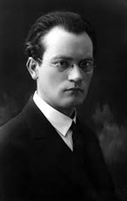

Vincas Mykolaitis-Putinas
 Vincas Mykolaitis-Putinas gimė 1893 m. sausio 6 d. ūkininkų šeimoje Pilotiškių kaime. Jis turėjo dar šešis brolius ir dvi seseris. Tėvas buvo labai griežtas, ambicingas, kieto charakterio. Motina jautresnė, švelnesnio būdo, niekada nerodydavo savo pykčio. Vincas dvi žiemas lankė Gudelių pradžios mokyklą, po to mokėsi Marijampolės gimnazijoje ir baigęs keturias klases, paskatintas tėvų, įstojo į Seinų kunigų seminariją. Besimokydamas pirmoje gimnazijos klasėje, pradėjo dainuoti mokinių chore, o vėliau ir Marijampolės lietuvių chore. Būdamas antrame kurse, jis įsitraukė į slaptą seminaristų lavinimosi būrelį. Ten studijavo Lietuvos istoriją, literatūrą, kalbą, ugdė savo literatūrinius ir mokslinius sugebėjimus. Laikraštyje „Šaltinis“ 1911 m. pasirodė pirmasis rašytojo eilėraštis ,,Sursum corda“ (,,Aukštyn širdis“), pasirašytas Putino slapyvardžiu. 1914 m. su pabaigtos seminarijos dokumentais jis atsidūrė Sankt Peterburge, ten 1915 m. buvo įšventintas į kunigus ir pradėjo studijuoti dvasinėje akademijoje. Čia atsivėrė naujos galimybės plėsti savo literatūrinį akiratį. Iš arčiau susipažino su meniniu gyvenimu. 1918 m., po trejų mokslo metų Sankt Peterburge, rašytojas gavo Amerikos lietuvių Tautos fondo stipendiją, suteikiančią galimybę studijuoti Friburgo universitete, Šveicarijoje, kuriame jis studijavo filosofiją, filosofijos ir meno istoriją, prancūzų kalbą ir literatūrą, psichologiją. 1922 m. apgynė disertaciją ir gavo filosofijos daktaro laipsnį. Baigus mokslus Friburge, atsirado galimybė studijoms Miuncheno universitete, ten jis studijavo literatūrą. Grįžęs į Lietuvą, V. Mykolaitis-Putinas 1923–1929 m. dirbo Lietuvos universiteto Teologijos-filosofijos fakultete Visuotinės literatūros katedros docentu. 1925 m. buvo Lietuvių meno kūrėjų draugijos sekretorius, padėjo įsteigti studentų ateitininkų meno draugiją „Šatrija“. 1928 m. tapo profesoriumi Kaune. 1935 m. V. Mykolaitis-Putinas oficialiai atsisakė kunigystės, susituokė su Emilija Kvedaraite ir sukūrė šeimą. 1940 m. pradžioje kartu su Vytauto Didžiojo universiteto Humanitarinių mokslų fakultetu persikėlė dirbti ir gyventi į Vilnių. Buvo išrinktas fakulteto dekanu ir į Vilniaus universiteto Bičiulių draugijos valdybą. V. Mykolaitis-Putinas pradėjo profesoriauti Vilniaus universitete, dėstė lietuvių literatūrą. 1941 m. tapo Lietuvių literatūros instituto direktoriumi. 1954 m. pasitraukė iš darbo universitete. Tais pačiais metais, pablogėjus sveikatai, V. Mykolaitis-Putinas pasitraukė į pensiją ir atsidėjo vien kūrybiniam darbui. Vincas Mykolaitis-Putinas mirė 1967 m. birželio 7 d. Kačerginėje. Palaidotas Vilniaus Rasų kapinėse. Antkapinį paminklą ,,Mūza“ sukūrė skulptorius V. Vildžiūnas.
Kūryba
1917 m. Sankt Peterburge išleido pirmąjį lyrikos rinkinį „Raudoni žiedai“ kartu su poema „Kunigaikštis Žvainys“. Studijų metais V. Mykolaitis-Putinas parašė nemažai eilėraščių, sukūrė poetinę dramą „Valdovo sūnus“, parengė literatūrinių straipsnių. 1926 m. pasirodė antroji V. Mykolaičio-Putino poetinė drama „Žiedas ir moteris“, vėliau „Nuvainikuota vaidilutė“, kurioje, rašytojas mėgino simboliškai įprasminti istorinį lietuvių tautos likimą. 1927 m. išėjo lyrikos rinkinys „Tarp dviejų aušrų“. Tada V. Mykolaitis-Putinas tapo vienu ryškiausių lietuvių poetų. 1932 metais jis rašė romaną „Altorių šešėly“. Vėliau išleido tokių kūrinių, kaip „Keliai ir kryželiai“, „Krizė“, „Sveikinu žemę“, „Skalvių mergelė“, „Būties valanda“.
Atminimo įamžinimas
Vinco Mykolaičio – Putino atminimui Vilniuje yra įrengtas muziejus. 1944 m. rudenį buvusiame Vinco Krėvės bute nr. 1 apsigyveno V. Mykolaitis-Putinas. 1947 m. jis su šeima persikėlė į 3 butą ir jame gyveno iki savo mirties. LRT mediatekoje, „Vidurnakčio lyrikoje“, galima pasiklausyti ne vieno V. Mykolaičio – Putino kūrinio.
2019 metais buvo išleistas režisieriaus Juozo Javaičio dokumentinis filmas apie V. Mykolaitį – Putiną „Vieno buto istorija. V. Mykolaitis-Putinas“
Galerija